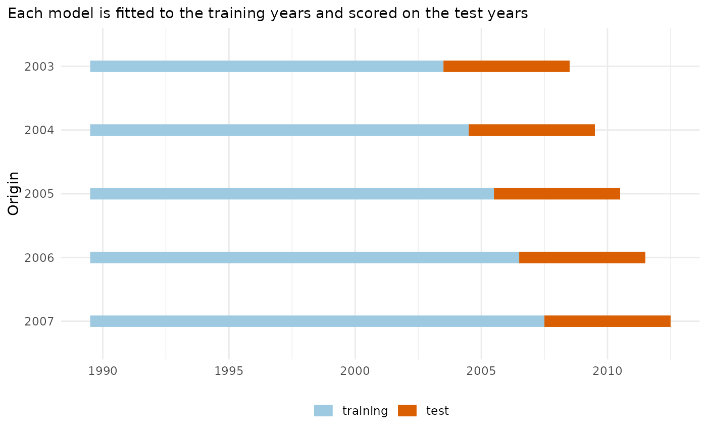

mt_plot_backtest_design()shows the training and test years of each origin of a rolling-origin backtest: every model is fitted to the years up to the origin and scored on the years after it.mt_plot_pit()shows the histogram of the probability integral transform (PIT: the share of forecast draws below the observed value) per model. Calibrated forecasts give a flat histogram; a U shape means intervals that are too narrow, a hump in the middle intervals that are too wide, a slope a bias.mt_plot_tuning()shows the scores of the settings ofmt_tune()with one standard error, the chosen setting highlighted.
Usage
mt_plot_backtest_design(data, origins, h)
mt_plot_tuning(tune)
mt_plot_pit(
backtest,
target = c("rate", "life_expectancy", "asr", "life_expectancy_gap", "asr_gap"),
bins = 10
)Arguments
- data
An mt_data object (its years).
- origins
Forecast origins (last training years).
- h
Horizon.
- tune
The result of
mt_tune().- backtest
An
mt_backtest()result.- target
"rate","life_expectancy","asr","life_expectancy_gap"or"asr_gap"(seequantitiesandcontrastinmt_backtest()).- bins
Number of histogram bins.
Examples
if (requireNamespace("ggplot2", quietly = TRUE)) {
x <- mt_example(deaths = "single", years = 1990:2012)
mt_plot_backtest_design(x, origins = 2003:2007, h = 5)
}
